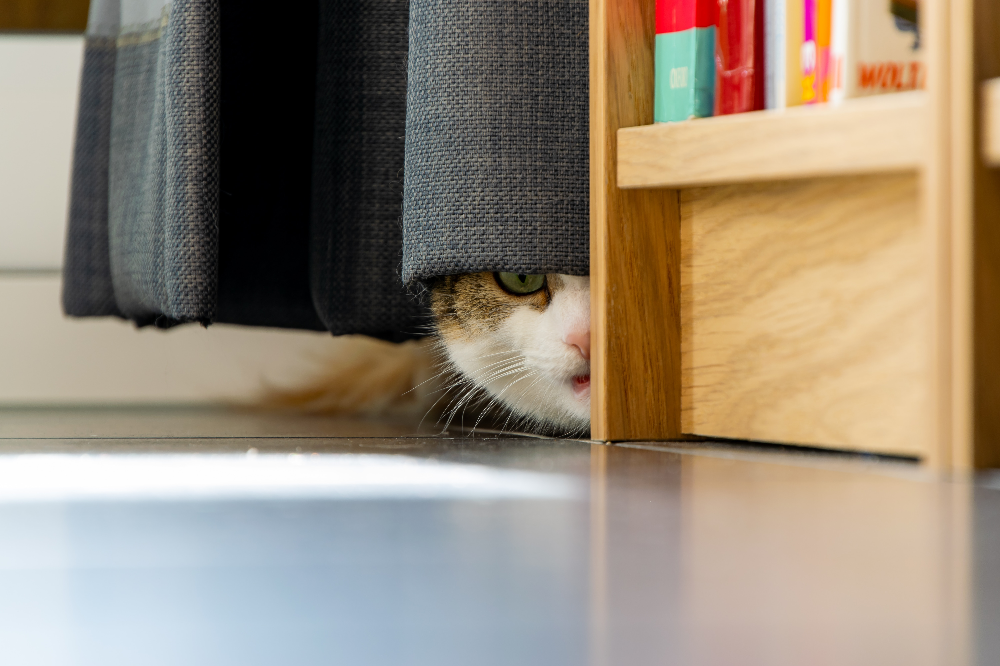
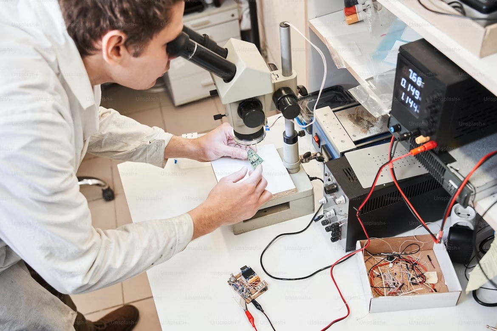

В Москве успешно провели операцию на сердце новорожденному малышу

Московские врачи провели успешную операцию на сердце новорожденному,
который при появлении на свет весил всего 760 граммов, сообщила пресс-служба
столичного департамента здравоохранения.
Ребенок родился в конце декабря в перинатальном центре ГКБ № 67 имени Л. А. Ворохобова
раньше срока — на 24-й неделе беременности.
В труппе Ачинского драмтеатра появился пушистый актер

Пушистый четырехмесячный актер - котенок Честер появился в труппе Ачинского
драматического театра в Красноярском крае и успешно дебютировал в спектакле
"Первая любовь" режиссера Дмитрия Акимова, рассказала РИА Новости администратор
театра Ольга Ионова.
По ее словам, Честер - не первый кото-актер, задействованный в постановке.
Ранее эту роль успешно исполняла кошка Муся, но в силу обстоятельств хозяйка
не смогла привозить ее на спектакли, пришлось искать замену.
В МИСИС разработали устройство для сшивания ран в военно-полевых условиях

Ученые университета МИСИС разработали "тканевой пистолет", сшивающий раны
биополимерами, разработка предназначена для работы в военно-полевых условиях
и в зоне ЧС, "пистолет" может останавливать кровотечения и запускать регенеративные
процессы при ранениях легкой и средней степени тяжести,
сообщили РИА Новости в пресс-службе вуза.
В Перми школьники, плывшие на льдине по Каме, выбрались на берег
Жители Перми заметили на плывущей по Каме льдине двух школьников,
но они смогли выбраться на берег без помощи спасателей, сообщает региональный
главa МЧС.
Накануне местные жители писали в соцсетях, что видели двух школьников на льдине,
проплывавшей по Каме мимо набережной в районе Коммунального моста. По их словам,
льдина двигалась к берегу.
В сафари-парке "Тайган" амурская тигрица родила четырех детенышей
Амурская тигрица родила четырех детенышей в сафари-парке "Тайган"
в Белогорском районе Крыма, сообщил РИА Новости директор парка Олег Зубков.
"В этом году в нашем парке родились первые амурские тигрята", — сказал он.
В свою очередь, пресс-секретарь сафари-парка Татьяна Алексагина сообщила,
что из четверых тигрят — два мальчика и две девочки.